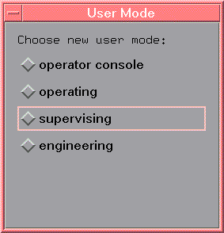

Changing the User Mode
The top button in each of the Operation Control screens indicates your current user mode. Clicking this button reveals a new shortcut menu that allows you to change the user mode (provided you know the password, if relevant).
To change the user mode, proceed as follows:
- In the Operation Control Window, click the user mode button.
- The screen shown below appears.

- Click the appropriate user-mode keyword or associated
diamond. Note Before you use the operate console mode you have to install the operator console. For detailed information, see The Operator Console for Controlling Workorders.
If a password is required, an entry-box appears prompting you for the correct password. See Changing the SmarTest Mode Passwords for details on setting and changing user mode passwords.
- Key in the password-if required-and press return.
You are only prompted for a password when you are going to a higher user level; for example operator to supervisor, or supervisor to engineer. Changing from Operator Console to Operator status requires no password.
The Operation Control Window appears in its new mode providing the appropriate options.
Functional changes
- Introduced before SmarTest 6.3.2
- SmarTest 6.5.3: Introduced new operator console